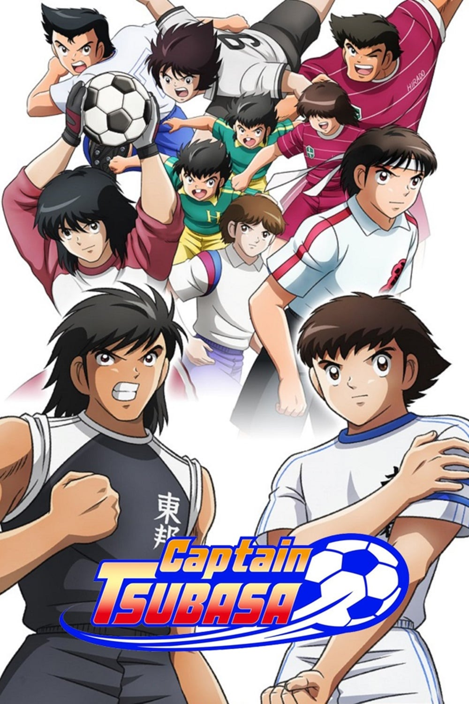

등급 : 15세 이상
평점 :
편성 : 52부작
TV 만화

축구를 사랑하는 츠바나는 관중들의 환호, 공의 속도, 선수들의 열정, 그리고 그가 될 수 있는 최고의 축구 선수가 되기 위해 노력하는 것에서 오는 흥분.
그의 목표는 월드컵을 목표로 하는 것이고, 그것을 위해 그는 두 다리로 걸을 수 있는 순간부터 축구를 연습하는데 수 많은 시간을 보냈습니다.
이제, 그는 치열한 경기에서 바르셀로나 팀에서 뛰면서, 그의 꿈이 실현되기 직전인 것처럼 보입니다.